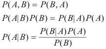

Linear perceptrons allow us to learn a decision boundary that would separate two classes. They are very effective when there are only two classes, and they are well separated. Such classifiers are referred to as discriminative classifiers.
In contrast, generative classifiers consider each sample as a random vector, and explicity model each class by their distribution or density functions. To carry out the classification, we compute the likelihood that a given sample belong to each of the candidate classes, and assign the sample to the class that is most likely. In other words, we need to compute P(ωi/x) for each class ωi. However, the density functions provide only the likelihood of seeing a particular sample, given that the sample belongs to a specific class. i.e., the density functions provide us p(x/ωi). The Bayes rule provides us with an approach to compute the likelihood of the class for a given sample, from the density functions and related information.

"The essence of the Bayesian approach is to provide a mathematical rule explaining how you should change your existing beliefs in the light of new evidence. In other words, it allows us to combine new data with their existing knowledge or expertise. The canonical example is to imagine that a precocious newborn observes his first sunset, and wonders whether the sun will rise again or not. He assigns equal prior probabilities to both possible outcomes, and represents this by placing one white and one black marble into a bag. The following day, when the sun rises, the child places another white marble in the bag. The probability that a marble plucked randomly from the bag will be white (i.e., the child's degree of belief in future sunrises) has thus gone from a half to two-thirds. After sunrise the next day, the child adds another white marble, and the probability (and thus the degree of belief) goes from two-thirds to three-quarters. And so on. Gradually, the initial belief that the sun is just as likely as not to rise each morning is modified to become a near-certainty that the sun will always rise."
In terms of classification, the Bayes theorem allows us to combine prior probabilities, along with observed evidence to arrive at the posterior probability. More or less, conditional probabilities represent the probability of an event occurring given evidence. To better understand, Bayes Theorem can be derived from the joint probability of A and B (i.e. P(A,B)) as follows:

where P(A|B) is referred to as the posterior; P(B|A) is known as the likelihood, P(A) is the prior and P(B) is generally the evidence and is used as a scaling factor. Therefore, it is handy to remember Bayes Rule as:

These terms will be discussed a little later.

The high level goals of the experiment are:
- To understand the computation of likelihood of a class, given a sample.
- To understand the the use of density/distribution functions to model a class.
- To understand the effect of prior probabilities in Bayesian classification.
- To understand how two (or more) density functions interact in the feature space to decide a decision boundary between classes.
- To understand how the decision boundary varies based on nature of the density functions.


Q1. The covariance matrix is always
a. Square
b. Positive Semidefinite
c. Positive Definite
d. Symmetric
e. None of the above.
For each of the properties you selected, describe what would happen if the covariance
matrix does not satisfy that property.
Q2. Describe the possible set of decision boundaries that can be generated using
gaussian density functions in a two class problem.

.
Stage 1:
- Lauch the experiment and clear the pane. Assign differnt means and covariances for each of the classes and observe the resulting densities. Use the mark-all button to observe the decision boundaries.
- Note down your observations on the relationship between the decision boundaries and the density functions.
Stage 2:
- Repeat the above procedure for different values of prior probabilities.
- Observe the change in the scaled density functions and decision boundaries
- Note down your observations regarding the change of decision boundaries
Stage 3:
Generate the following types of decision boundaries by varying the means and covariance matrices.- Straight line
- Parallel Straight lines
- Concentric circles
- Parabola
- Hyperbola
- Four Quadrants

- Pattern Classification, by Duda, Hart and Stork (ed). Second Edition, Wiley, 2001
- Article on Bayes Theorem at Wikipedia
- Article on Naive Bayes Classifier at Wikipedia